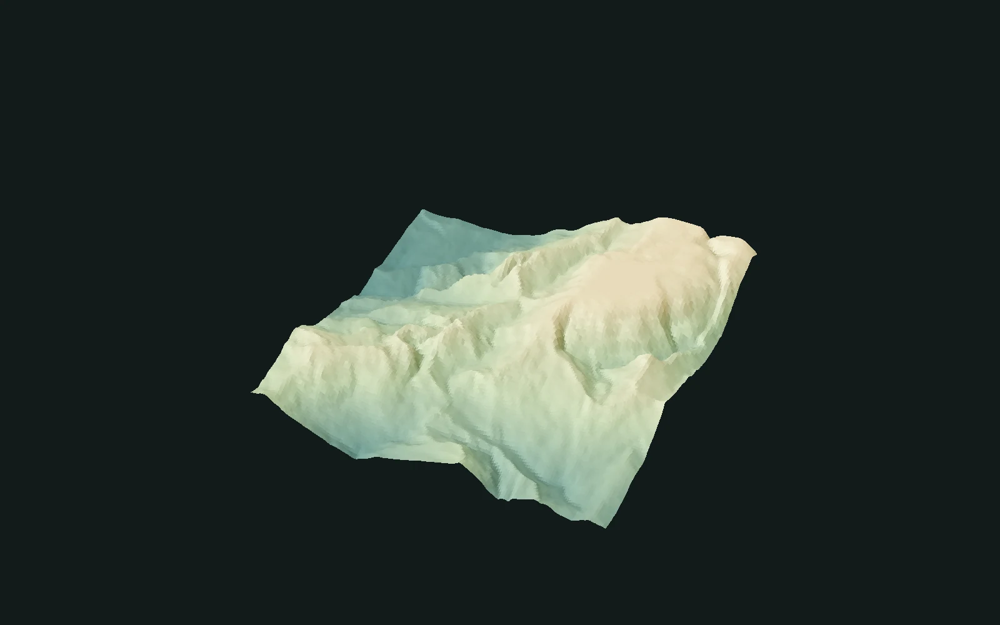

Search results
Terrain / Verified
SoftClip
Guide the heights. Keep the shape.
Use a soft transition around a chosen threshold to shape the height range. Explore a strong correction or a gentler treatment of the original form.
Inspect the record ↓
01 / The result study
One process. Different expressions.
Control peaks and valleys without an abrupt height cutoff.
Original height range
Gently compress the peaks
Lift the valley floor
Keep more of the original shape
Rendered from existing evaluated samples. Camera, display relief, lighting and color range are shared within each study. Original sample values are unchanged. Effect examples and numerical test cases have separate parameter recipes. Images show the effect; the result summary records the numerical comparison.
02 / Technical details
Verification record
Dated verification snapshot · 2026-10-16
- Fixed cases
- 64
- Numerical resolutions
- 64² / 128²
- Absolute tolerance
- 2.0000e-6
- Observed max. error
- 1.7881e-7
Inspect the record
Verified backend: CPU · Verified on: 2026-10-16
Operation / implementation: 2 / 1
Display treatment and media provenance ↗
soft-clip-cpu-2026-10-1603 / Scope
What this record covers
- Both directions and all four controls remain available, including their recorded boundary behavior.
- 64 full-Graph cases cover 64² and 128², including optional-input routing and zero-softness behavior.
- The 1024² images are artistic examples. Physical controls, GPU / Unreal and production Bake are outside this record.